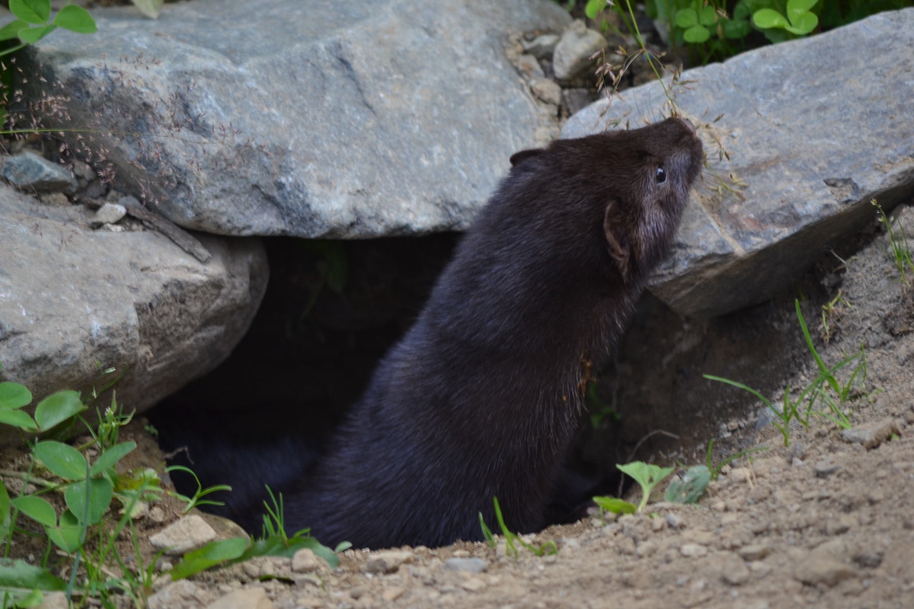

Cascadia Genetics
Laboratory
Noninvasive genetic surveys, DNA metabarcoding, and environmental DNA — population-level answers from hair, scat, water, and air.
Genetics Without Capture
The Cascadia Genetics Laboratory was built around a simple principle: the best wildlife genetics work doesn't require handling an animal. Our core expertise is noninvasive genetic surveying — designing, executing, and analyzing studies that extract population-level information from shed hair, fecal DNA, environmental DNA in water and sediment, and multi-species community DNA from bulk environmental samples.
We are specialists, not generalists. We partner with field teams, agencies, and researchers to design sampling strategies from the ground up, extract usable DNA from the most challenging samples, and deliver results that are statistically defensible and directly actionable for management. Our protocols are optimized for low-quality, low-quantity DNA, and our quality-control processes ensure reliable genotype calls even from highly degraded material.
DNA metabarcoding is a growing pillar of the lab — allowing us to characterize multi-species communities, reconstruct predator diets from scat, and assess aquatic biodiversity from filtered water samples, all from a single sequencing run.
Work With UsGenetics Services
End-to-end services from survey design and field protocols through molecular processing and population-level analysis
Noninvasive Genetic Surveys
Full-service noninvasive surveys using hair snares, scat transects, rub trees, and remote collection arrays. We design sampling frameworks, train field crews, manage sample logistics, and deliver population estimates, occupancy maps, or connectivity assessments.
Environmental DNA (eDNA)
Detect species presence, estimate relative abundance, and characterize community composition from water, sediment, and air samples — covering everything from field filtration protocols to metabarcoding libraries and occupancy-based detection modeling.
DNA Metabarcoding
High-throughput sequencing of bulk environmental samples to characterize multi-species communities. Applications include diet analysis from predator scat, aquatic biodiversity assessment from eDNA, and invertebrate community surveys.
DNA Mark-Recapture
Identify individuals from noninvasive samples using multi-locus genotypes — enabling population size estimation, survival analysis, and movement characterization without a single capture event. Integrates directly with our spatial capture-recapture analysis.
Population Genomics
Characterize genetic diversity, population structure, and connectivity using SNP panels or whole-genome data. Used for ESA listing support, management unit delineation, and recovery planning.
Wildlife Forensics
Legally defensible molecular evidence for wildlife law enforcement — individual matching, geographic origin, species confirmation, and chain-of-custody documentation meeting evidentiary standards.
Our People
A dedicated team of molecular ecologists, field scientists, and lab specialists

Jennifer Allen
Lab Manager

Joel Ruprecht
Research Scientist

Claire Goodfellow
Research Scientist
Abigail Tweten
Lab Staff
Maizy Kesterson
Lab Staff
Paige Blount
Lab Staff
Lisa Wooden
Lab Staff
Alexa Nino de Rivera
Lab Staff


